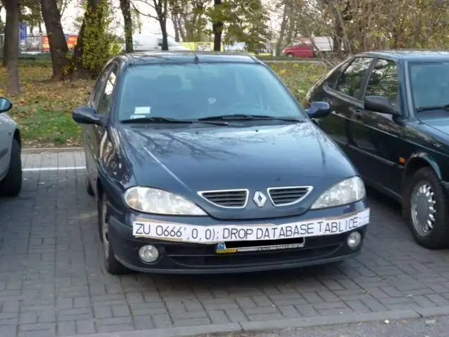

Legal action is when there is a judicial proceeding brought by one party against another in order to...
Software piracy is the practice of illegally downloading and distributing copyrighted content digitally...
Inclusivity is when software is is accessible and does not exclude any section of society.
Go back home Go back home Go back home Go back home Go back home Go back home Go back home Go back home
Legal action is when there is a judicial proceeding brought by one party against another in order to prosecute the wrong doings of a company, as well as for protect and prevent more wrong actions..
Scroll down for more information
Data privacy refers to a software application’s ability to keep and protect sensitive and private data, as well as refrain from the information being shared and sold to third party sources. Whereas, data security is how protected the data is from unauthorised users, for instance bank transactions made over the internet being secure and unable to be intercepted by third parties. This poses issues especially now in regards to where a users data is stored and where it goes. For instance, today many users rely upon cloud based services for handling their data, such as Google Drive or Apple iCloud. This data is valuable and can be used for good and malicious intents.
In fact, user data has become one of the most valuable resources in the world, as it not only holds people’s personal information, such as banking details, but holds people’s digital habits. This can leverage a company to make suitable offers to their products.
However, the problem arises with people who intentionally attempt to break through the security and privacy protocols (hackers). As a result, developers have the responsibility to handle data securely and privately away and protected from hackers. For instance, developers can use various security protocols like encryption, firewalls, 2FA, and ensure their software is up to date with no vulnerabilities to attacks like SQL injections and DDOS Attacks.
 Source: Image depicts a potential SQL injection targetted at speed cameras, which would potentially clear the database of licence platesWithout digital security, everyone’s data would be easily accessible and used such as identity theft and fraud. This not only affects people individually, but also negatively society and the economy as a whole. Similarly, without digital privacy, there would be greater compromise of people’s information and freedom which can be used for malicious intent, influencing human behaviour. For more information on digital privacy, watch Glenn Greenwald and his Ted Talk “Why privacy matters”.
On the 17th of March, Equifax, an American credit agency suffered a data breach that resulted in being able to access over 143 million consumers personal data including social security numbers as well as 209 thousand people’s credit card information. This breach not only exposed people’s private information but costed them over 1.4 billion dollars on upgrading security.
This attack was primarily the result of a security vulnerability for which the software framework Apache Struts had reported a security vulnerability that was soon patched the day the vulnerability was discovered. This vulnerability resulted in “attackers sending HTTP requests with malicious code tucked into the content-type header, Struts could be tricked into executing that code, and potentially opening up the system Struts was running on to further intrusion” (Fruhlinger, 2022) This is known as a remote code execution. However, Equifax did not update their systems, thus for 76 days attackers were active in Equifax networks undiscovered. Fortunately, according to CSO Australia, there have been 0 cases of fraud caused by the attack.
This case study effectively displays the implications and importance of data security and protecting the information of people, as a vulnerability will pose potential threats to identity theft and fraud, as well as major financial cost in damages done.